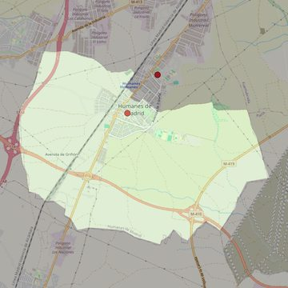

Santo Domingo de Guzmán
- Arciprestazgo
- Griñón
- Población
- Humanes de Madrid
- Dirección postal
- Pza. Constitución, 4
- Código postal
- 28970
- Extensión
- 11,92 km² (1.192 ha)
- Teléfono
- 916 040 222
- Correo electrónico
- santodomingo-humanes@diocesisgetafe.es
- Información demográfica
- De la parroquia · De la población (Humanes de Madrid) · Del arciprestazgo (Griñón)


Descargar mapaLímites según decreto
Texto del decreto pendiente de incorporar.
Desarrollos urbanísticos previstos
- Humanes de Madrid: Plan Vive: 50 viviendas · en obras o en venta
Las cifras y sus fuentes están en la ficha de cada desarrollo, en la sección «Previsión de desarrollos urbanísticos».